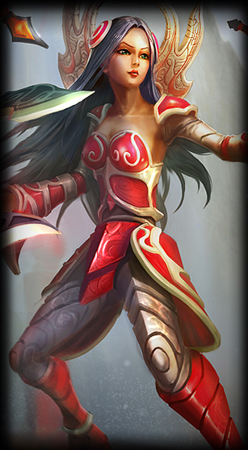

Informationen über Irelia
Irelia "Der Wille der Klingen"
Irelia ist ein sehr starker Champion auf der Lane, sie kann sich selbst gegen schwierige Gegner wie Darius beweisen, dass liegt unter anderem an ihrer E-Fähigkeit "Equilibrium Strike" die einer Gegner zu 60% verlangsamt oder in sogar 2 sec. stund, wenn der Gegner prozentual mehr Leben hat als sie. Trozdem hält Sie im Earlygame nicht viel aus, was sie aber mit ihrer W-fähigkeit "Hiten Style" gut kompensieren kann, weil diese ihr mit jedem automatischen Angriff Leben wieder gibt. Außerdem kann sie durch ihre Q-Fähigkeit "Bladesurge" gut farmen, traden und entkommen.
Im späteren Verlauf des Spiels entfaltet sie ihre ware kraft. Sie wird meistens auf der Top-Lane gespielt, was sie mit der Fähigkeit "Teleportation" zu einem super Splitpusher macht. Weil so gut wie kein Champion ein 1v1 gegen Irelia Gewinnen kann ist es für sie ein leichtes spielt druck auf der Top-Lane auszuüben wärend der Rest des Team Druck auf anderen Lanes oder Objekten ausüben kann.
Sie ist sehr schwach am Anfang des games also sollte man schon da sie versuch so oft es geht zu töten und sie vom farmen abzuhalten. je weniger Gold sie hat, desto weniger Items hat sie auch und sie brauch Item und Schaden bzw. Tankyniss zu bekommen
 Merkurs Schuhe
Merkurs Schuhe DeadMan's Plate
DeadMan's Plate Trinity Force
Trinity Force  Spirit Visage
Spirit Visage Sterak's Gage
Sterak's Gage  Blade of the Ruined King
Blade of the Ruined King